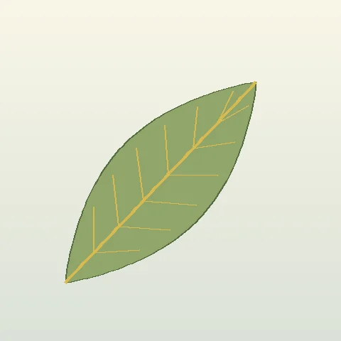

叶脉发黄
叶脉变黄，叶肉仍绿
这是与该表现相符的一种可能原因，请结合下方特征核对。

先看哪里
比较多片新旧叶，观察变色是否严格沿叶脉，并记录叶形变化。
可能原因与下一步
叶脉变色的原因需要结合寄主判断。先记录发展情况，若持续蔓延，向植物诊疗机构咨询。
叶脉变黄，叶肉仍绿
这是与该表现相符的一种可能原因，请结合下方特征核对。

比较多片新旧叶，观察变色是否严格沿叶脉，并记录叶形变化。
叶脉变色的原因需要结合寄主判断。先记录发展情况，若持续蔓延，向植物诊疗机构咨询。